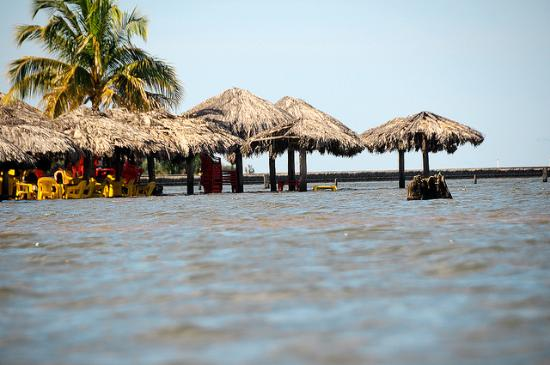
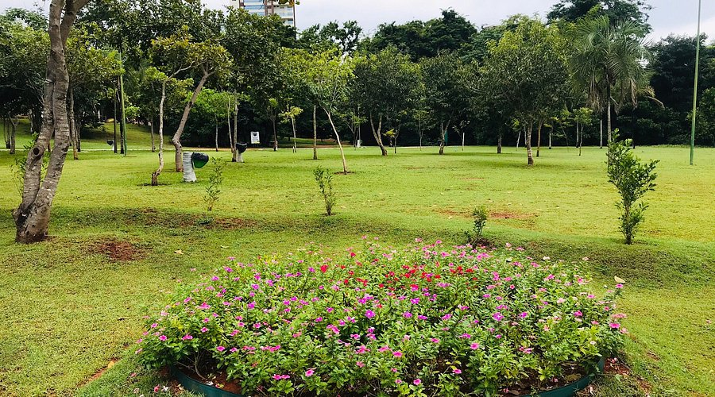
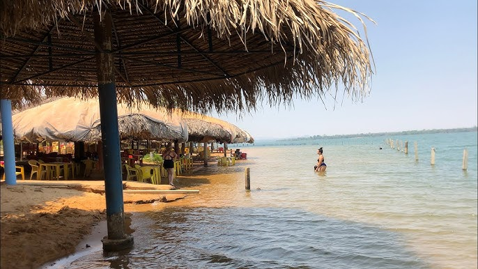
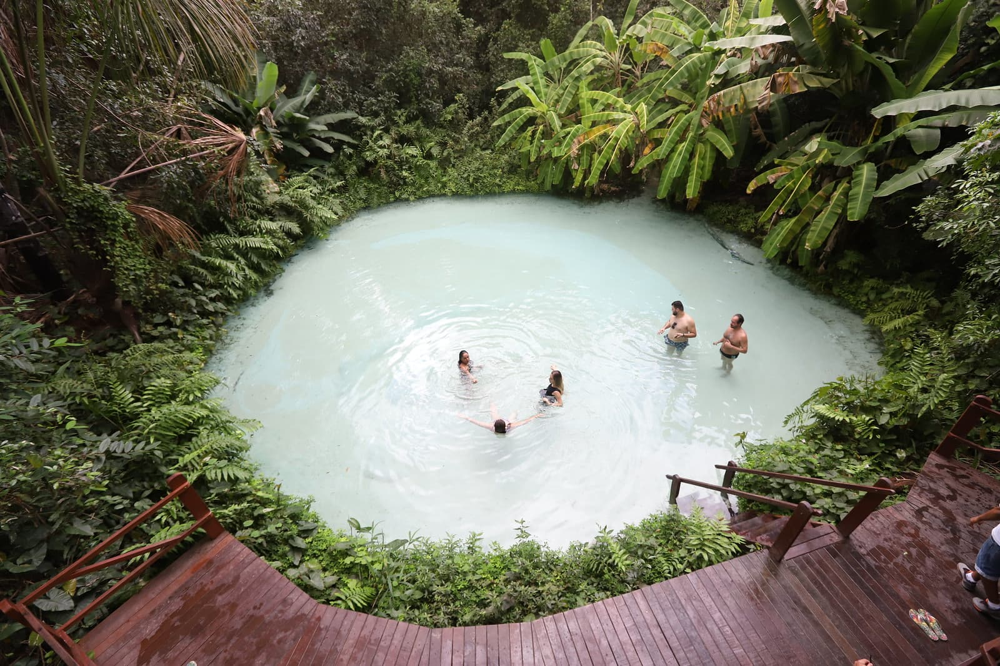

O que eu mais gosto em Palmas é a sua natureza exuberante, com suas praias de água cristalina e suas paisagens deslumbrantes. A cidade é um paraíso para os amantes da natureza, oferecendo uma variedade de atividades ao ar livre, como caminhadas, passeios de barco e mergulho. Além disso, a cultura local é rica e vibrante, com uma mistura de influências indígenas e coloniais que se refletem na culinária, música e festivais da região. Palmas é um lugar onde a beleza natural e a cultura se encontram, tornando-se um destino imperdível para quem busca uma experiência única e inesquecível.
Praia do Prata

Essa é a Praia do Prata, um dos lugares mais bonitos de Palmas. Com suas águas cristalinas e areia branca, é o local perfeito para relaxar e aproveitar a natureza.
Parque Cesamar

Parque Cesamar é um espaço verde ideal para atividades ao ar livre e momentos de lazer em meio à natureza.
Praia do Caju

A Praia do Caju é um local encantador, perfeito para desfrutar de um dia de sol e mar, com suas águas calmas e paisagem deslumbrante.
Fervedouros do jalapão

Os Fervedouros do jalapão são um dos pontos turísticos mais populares de Palmas, conhecidos por suas águas quentes e paisagens naturais impressionantes.